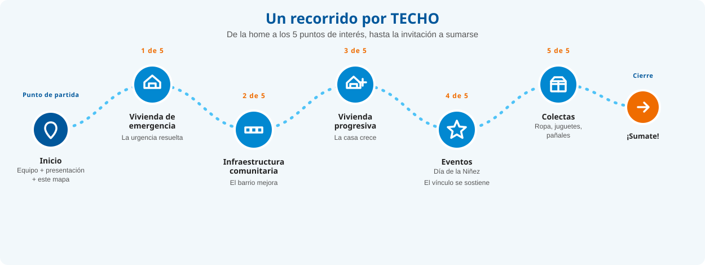

Equipo
Grupo N.º 6
Calderón, Felipe
Díaz Seoane, Agustín Edgardo
Fernández, Nicolás Esteban
Ferrario, Lorenzo
Srolovich, Lara
Presentación del recorrido
Este recorrido nace del trabajo individual de la Actividad 1 ("Barrios en Construcción"), documentando jornadas reales de voluntariado junto a TECHO. Ahora lo ampliamos en grupo para mostrar, en un solo sitio, los distintos tipos de intervención que hace TECHO en barrios populares de la Zona Sur del Gran Buenos Aires —Quilmes, Florencio Varela, entre otros—: de la vivienda de emergencia a la infraestructura comunitaria, pasando por la vivienda progresiva, los eventos y las colectas. Cada punto de interés muestra cómo esa intervención suma a mejorar la calidad de vida del barrio.

Mapa del recorrido
Los 5 puntos de interés siguen un mismo hilo conductor: de resolver una urgencia habitacional a sostener el vínculo con el barrio en el tiempo. Así se conectan entre sí, antes de la invitación a sumarse:
Deslizá para ver el recorrido completo →

Los 5 puntos de interés
1. Vivienda de emergencia
El proyecto insignia: casas prefabricadas de madera, construidas en un fin de semana junto a la familia y un grupo de voluntarios.
Ver recorrido2. Infraestructura comunitaria
Veredas, escaleras, caminos y espacios recreativos que TECHO construye junto a los vecinos para mejorar la vida en el barrio.
Ver recorrido3. Vivienda progresiva
Un modelo de vivienda flexible que las familias pueden ampliar con el tiempo, según sus necesidades.
Ver recorrido4. Eventos
Jornadas recreativas para las infancias del barrio, como el Día de la Niñez, organizadas junto a los voluntarios.
Ver recorrido5. Colectas
Recolección de ropa, juguetes y pañales para las familias de los barrios donde trabaja TECHO.
Ver recorrido¿Querés sumarte?
Después de conocer los 5 proyectos, conocé cómo participar como voluntario o hacer una donación.
Ir a SumateDocumentación del proyecto
Para más detalles sobre la propuesta, el tema elegido y los objetivos de este recorrido, consultá el archivo README.md del repositorio.